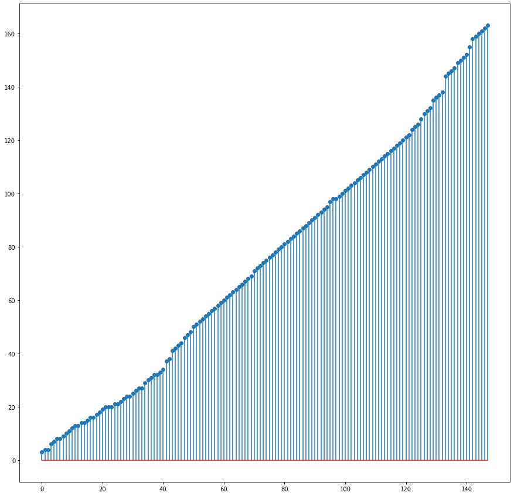
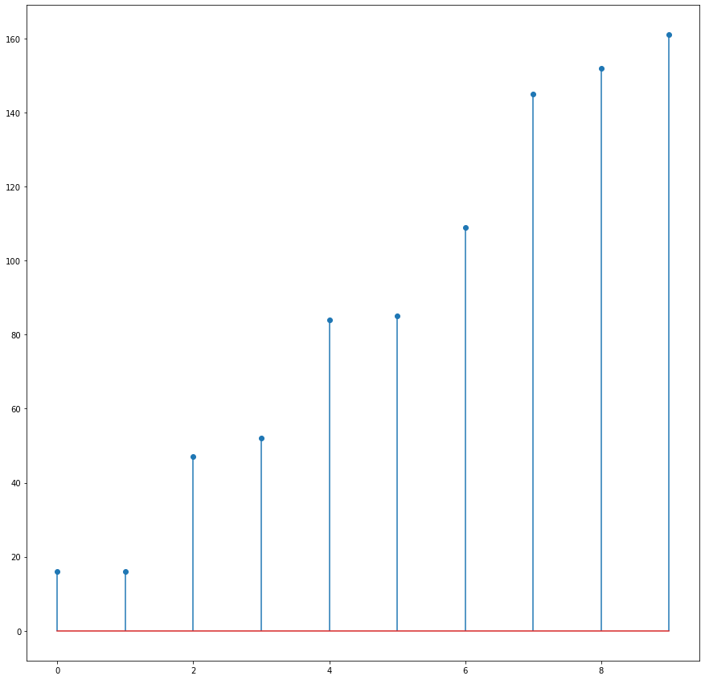
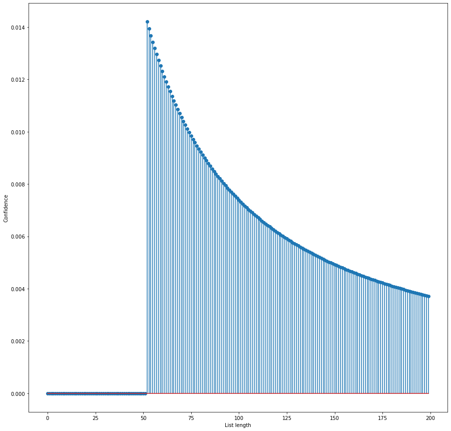
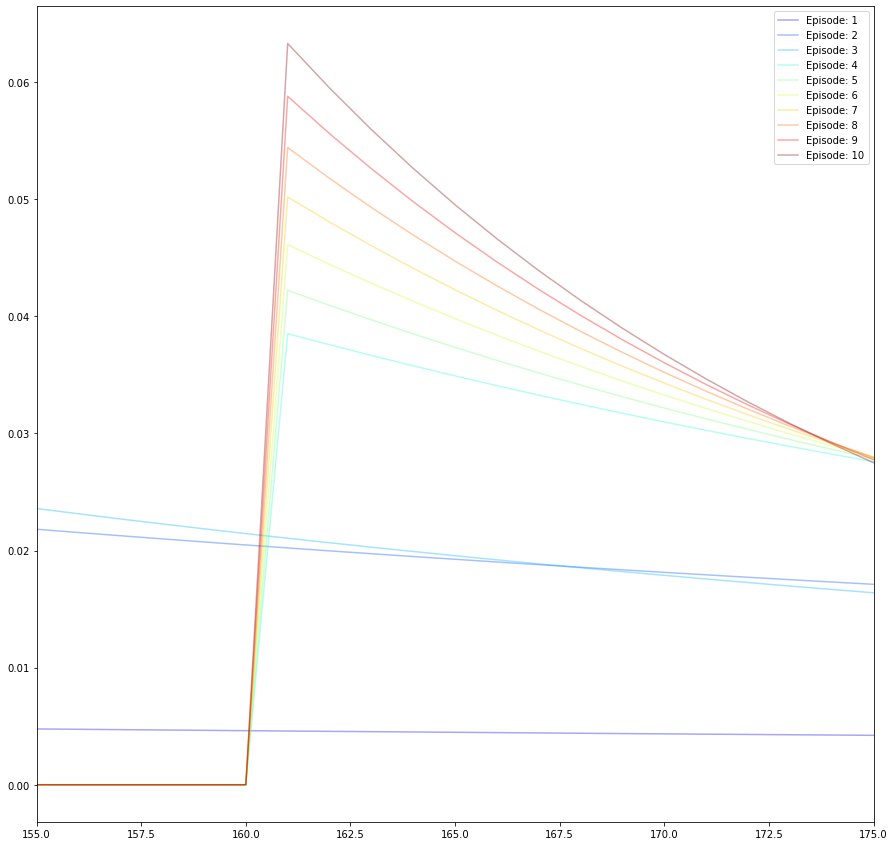
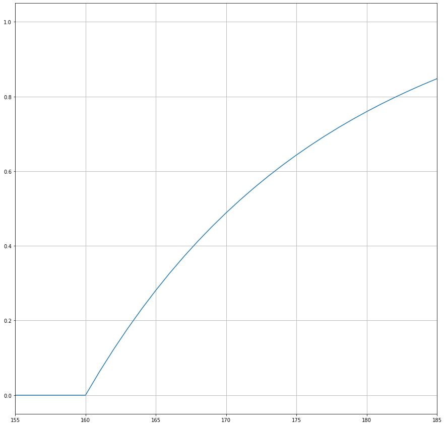

import numpy as np
import matplotlib.pyplot as plt
plt.rcParams['figure.figsize'] = [15, 15]
# E: the data
y = np.array([52, 145, 84, 161, 85, 152,
47, 109, 16, 16, 106, 101,
64, 73, 57, 83, 88, 135,
119,120,121, 122, 42, 8, 8, 104, 112,
89, 82, 74, 114, 22, 12,
21, 21, 67, 71, 93, 94,
75, 7, 97, 117, 62, 87,
55, 11, 38, 80, 72, 43,
50, 86, 31, 108, 24, 24,
95, 132, 103, 77, 113, 78,
32, 32, 41, 18, 14, 14,
79, 66, 65, 81, 105, 53,
98, 98, 111, 163, 102,
34, 107, 59, 10, 61, 29,
46, 4, 4, 30, 37, 76, 44,
54, 90, 48, 13, 118, 100,
56, 63, 51, 68, 19, 25,
23, 13, 110, 26, 17, 33,
20, 124, 146, 147, 131, 91, 116,
58, 99, 160, 20, 20, 9,
6, 115, 69, 136, 92, 128,
60, 15, 27, 27, 151, 138,
130, 125, 162, 159, 3, 137,
155, 144, 126, 158, 149,
150])Overview
I’m learning French, and as part of my language-learning journey, I’m slowly working through The Blacklist on Netflix.
The show’s premise involves an antihero, played by James Spader, working through a list of nefarious characters, taking them down one at a time.
Out of idle intellectual curiosity, I was curious about how many names are on the list based on the sample of names given. It’s an interesting problem we can solve using Bayesian analysis, more commonly known as the “German Tank Problem” or the “Locomotive Problem”.
It’s also an exciting intro to Bayesian analysis. We are trying to infer an unknown quantity (The number of people on the list) while only being able to observe samples from this distribution.
Bayes in Brief
Many other, far better blog posts cover this topic, particularly this one.
With that out of the way, let’s talk about the problem at hand and how we can solve it with Bayesian analysis.
We have some evidence, \(E\), which is what we observe. In this case, it’s the index in the blacklist that we find out about each episode. IE, in the first episode, it is entry number \(52\).
Then we have what we want to know, an estimate of the length of the blacklist, given the evidence we have observed. Given the evidence \(P(H|E)\), this is the probability of a hypothesis.
It’s a probability because we don’t know how long the blacklist is, given what we have observed, but we can work out how confident we can be about each potential option.
Given that \(P(H|E)\) is what we want, we can use Baye’s Formula to find it.
\(P(H|E) = \frac{P(E|H) P(H)}{P(E)}\)
We need three more pieces of the puzzle: \(P(E|H)\), \(P(H)\) and \(P(E)\).
\(P(E|H)\) is the probability of the evidence, given the hypothesis. This term is also known as the Likelihood and is the one I found most confusing while initially learning about Bayesian analysis. In this case, it could be more complex.
\(P(H)\) is our prior belief about the possible hypothesis. In this case, it’s long we plausibly think the blacklist could be. In practice, we know it has to be as long as any of the entries we have observed.
Much of the criticism of Baysian analysis comes from the fact we can inject our own beliefs into the process. In this case, I don’t have a strong view about the length of the blacklist, but it’s reasonable to assume that it’s probably less than 200 entries long.
Let’s assume that the blacklist is of length \(N\). Let’s also believe any given entry is as likely to be the subject of each episode as any other. Then the probability of drawing any given number is \(\frac{1}{N}\). This is the likelihood. Also, note the subtle point that N has to be at least as large as the number we have drawn.
Finally, we have \(P(E)\), which is the probability of the evidence. This is just a normalisation factor, which is often ignored.
Let’s get down to business. Fortunately, Wikipedia has all the data we need.
| No. overall | No. in season | Title | Blacklist guide | Directed by | Written by | Original air date | US viewers(millions) |
|---|---|---|---|---|---|---|---|
| 1 | 1 | “Pilot” | No. 52 | Joe Carnahan | Jon Bokenkamp | September 23, 2013 | 12.58[10] |
| 2 | 2 | “The Freelancer” | No. 145 | Jace Alexander | Jon Bokenkamp | September 30, 2013 | 11.35[11] |
| 3 | 3 | “Wujing” | No. 84 | Michael Watkins | Lukas Reiter | October 7, 2013 | 11.18[12] |
| 4 | 4 | “The Stewmaker” | No. 161 | Vince Misiano | Patrick Massett & John Zinman | October 14, 2013 | 10.93[13] |
| 5 | 5 | “The Courier” | No. 85 | Nick Gomez | John C. Kelley | October 21, 2013 | 10.44[14] |
| 6 | 6 | “Gina Zanetakos” | No. 152 | Adam Arkin | Wendy West | October 28, 2013 | 10.51[15] |
| 7 | 7 | “Frederick Barnes” | No. 47 | Michael Watkins | J. R. Orci | November 4, 2013 | 10.34[16] |
| 8 | 8 | “General Ludd” | No. 109 | Stephen Surjik | Amanda Kate Shuman | November 11, 2013 | 10.69[17] |
| 9 | 9 | “Anslo Garrick” | No. 16 | Joe Carnahan | Story by : Joe Carnahan & Jason George Teleplay by : Joe Carnahan | November 25, 2013 | 10.96[18] |
| 10 | 10 | “Anslo Garrick Conclusion” | No. 16 | Michael Watkins | Lukas Reiter & J. R. Orci | December 2, 2013 | 11.67[19] |
| 11 | 11 | “The Good Samaritan” | No. 106 | Dan Lerner | Brandon Margolis & Brandon Sonnier | January 13, 2014 | 9.35[20] |
| 12 | 12 | “The Alchemist” | No. 101 | Vince Misiano | Anthony Sparks | January 20, 2014 | 8.83[21] |
| 13 | 13 | “The Cyprus Agency” | No. 64 | Michael Watkins | Lukas Reiter | January 27, 2014 | 10.17[22] |
| 14 | 14 | “Madeline Pratt” | No. 73 | Michael Zinberg | Jim Campolongo | February 24, 2014 | 11.18[23] |
| 15 | 15 | “The Judge” | No. 57 | Peter Werner | Jonathan Shapiro & Lukas Reiter | March 3, 2014 | 11.01[24] |
| 16 | 16 | “Mako Tanida” | No. 83 | Michael Watkins | Story by : Joe Carnahan Teleplay by : John Eisendrath & Jon Bokenkamp & Patrick Massett & John Zinman | March 17, 2014 | 10.97[25] |
| 17 | 17 | “Ivan” | No. 88 | Randy Zisk | J.R. Orci & Amanda Kate Shuman | March 24, 2014 | 10.80[26] |
| 18 | 18 | “Milton Bobbit” | No. 135 | Steven A. Adelson | Daniel Voll | March 31, 2014 | 11.39[27] |
| 19 | 19 | “The Pavlovich Brothers” | Nos. 119-122 | Paul Edwards | Elizabeth Benjamin | April 21, 2014 | 11.24[28] |
| 20 | 20 | “The Kingmaker” | No. 42 | Karen Gaviola | J. R. Orci & Lukas Reiter | April 28, 2014 | 10.85[29] |
| 21 | 21 | “Berlin” | No. 8 | Michael Zinberg | John Eisendrath & Jon Bokenkamp | May 5, 2014 | 10.47[30] |
| 22 | 22 | “Berlin Conclusion” | No. 8 | Michael Watkins | Story by : Richard D’Ovidio Teleplay by : John Eisendrath & Jon Bokenkamp & Lukas Reiter & J. R. Orci | May 12, 2014 | 10.44[31] |
Putting it into practice
Now, let’s look at all the episodes, from the seasons that have been aired:
We are now plotting the episodes in order. If we had to guess now, we would likely guess that the length of the Blacklist is 163 episodes or a few more. This is because we have seen entries on the list up to 163, and It looks like nearly every entry on the list has been crossed off.
plt.stem(np.sort(y), use_line_collection=True)
plt.show()
Let’s say we have a sample of only the first ten episodes; what can we infer from this sample?
y_sample = y[0:10]
plt.stem(np.sort(y_sample), use_line_collection=True)
plt.show()
Let’s define our likelihood function, \(P(E|H)\).
def compute_likelyhood(i,observed):
if i < observed:
likelyhood = 0
else:
likelyhood = 1.0/i
return(likelyhood)Now let’s define the prior belief \(P(H)\) of what we think the length of the Blacklist could be.
prior = np.ones(200)
prior /= prior.sum()This prior is quite broad, and it’s also uniform. We aren’t imputing our human judgement about how long the list is.
Now, let’s start by computing the likelihood for each possible list length after watching the first episode and seeing person #52 crossed off the list.
posterior = np.zeros(200)
observed = 52
for i in range(0,200):
posterior[i] = prior[i] * compute_likelyhood(i,observed)
posterior /= posterior.sum()
plt.stem(posterior)
plt.xlabel('List length')
plt.ylabel('Confidence')
#plt.xlim(150,175)
plt.show()/Users/cooke_c/.local/lib/python3.7/site-packages/ipykernel_launcher.py:7: UserWarning: In Matplotlib 3.3 individual lines on a stem plot will be added as a LineCollection instead of individual lines. This significantly improves the performance of a stem plot. To remove this warning and switch to the new behaviour, set the "use_line_collection" keyword argument to True.
import sys
Now we have this belief state, having seen the first episode, we can recursively use it as a prior and update it each time we see an episode:
import matplotlib.pylab as pl
posterior = np.zeros(200)
episode_number = 1
for observed in y_sample:
for i in range(1,200):
posterior[i] = prior[i] * compute_likelyhood(i,observed)
posterior /= posterior.sum()
plt.plot(posterior,alpha=0.35,label='Episode: '+str(episode_number ), color=pl.cm.jet(episode_number/10.0))
episode_number+=1
prior=posterior
plt.legend()
plt.xlabel('List length')
plt.ylabel('Confidence')
plt.xlim(155,175)
plt.show()
From the above, as we see more data, our confidence in the length of the list increases. Let’s look at the cumulative probability for different list lengths:
plt.plot(np.cumsum(posterior))
plt.grid()
plt.xlim(155,185)
plt.xlabel('List length')
plt.ylabel('Cumulative Confidence')
plt.show()
From this, we can see that we can be approximately 50% confident that the length of Blacklist is between 160 and 170 entries long after we have seen the first ten episodes.
Conclusion
We have taken a lightning tour of how Bayesian analysis can allow us to infer from what we can observe a quantity we are interested in when a random process is involved.
In practice, Bayesian analysis isn’t conducted from first principles but instead uses a purpose-built library. Next time, I want to demonstrate how to do this analysis using PyMC3.